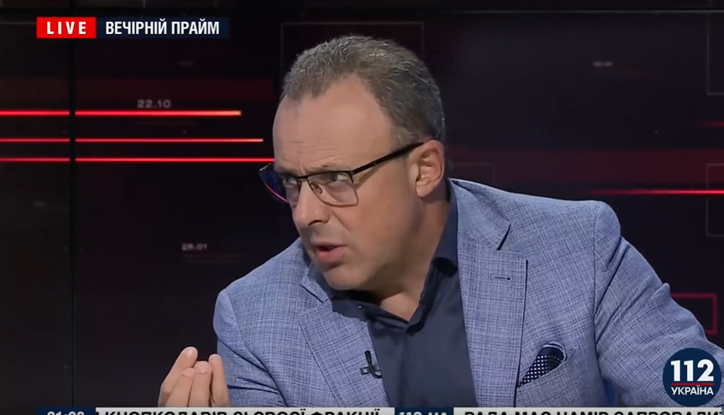

Виступ Д.Співака,12.09.2018
12.09.2018 у випуску передачі "Вечірній прайм" Дмитро Співак
виклав свій погляд на події в світі та в Україні.Зокрема, він сказав,
що безкарність депутатів за кнопкодавство є неприпустимою і має каратися
позбавленням мандату, а не штрафами, оскільки,на його думку,депутати
завдячують мандатом Зеленському: "Люди,коли голосували за "Слугу Народу"
на парламентських виборах,голосували за Зеленського.Люди завжди голосують
за керівних членів партій,а не за всю партію.Зеленський дав мандат депутатам
через голоси людей і має право його забрати".